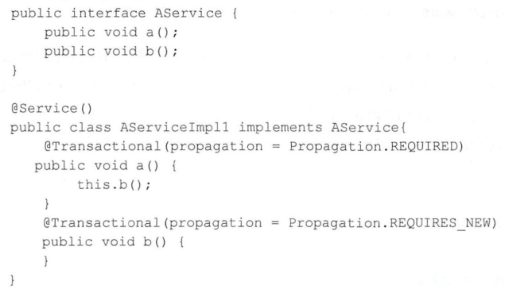
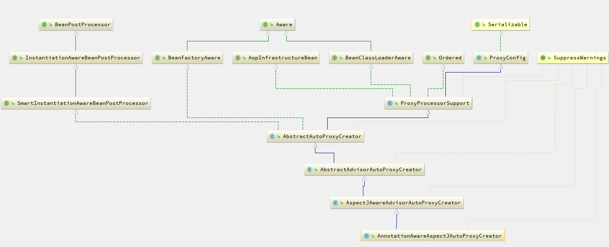

Spring源码分析（26）动态AOP
摘要: 本文结合《Spring源码深度解析》来分析Spring 5.0.6版本的源代码。若有描述错误之处，欢迎指正。
我们知道，使用面向对象编程（OOP）有一些弊端，当需要为多个不具有继承关系的对象引人同一个公共行为时，例如日志、安全检测等，我们只有在每个对象里引用公共行为，这样程序中就产生了大量的重复代码，程序就不便于维护了，所以就有了一个对面向对象编程的补充，即面向方面编程（AOP),AOP所关注的方向是横向的，不同于OOP的纵向。
Spring中提供了AOP的实现，但是在低版本Spring中定义一个切面是比较麻烦的，需要实现特定的接口，并进行一些较为复杂的配置。低版本SpringAOP的配置是被批评最多的地方。Spring听取了这方面的批评声音，井下决心彻底改变这一现状。在Spring2.0，SpringAOP已经焕然一新，你可以使用@AspectJ注解非常容易地定义个切面，不需要实现任何的接口。
Spring2.0采用@AspectJ注解，对POJO进行标注，从而定义一个包含切点信息和增强横切逻辑的切面。Spring2.0可以将这个切面织入到匹配的目标Bean中。@AspectJ注解使用AspectJ切点表达式语法进行切点定义，可以通过切点函数、运算符、通配柯：等高级功能进行切点定义，拥有大的连接点描述能力。我们先来直观地浏览一下Spring中的AOP实现。
动态AOP使用示例
动态AOP自定义标签解析
之前讲过Spring中的自定义注解，如果声明了自定义的注解，那么就一定会在程序中的某个地方注册了对应的解析器。我们搜索整个代码，尝试找到注册的地方，全局搜索后我们发现了在AopNamespaceHandler中对应着这样一段函数：
public void init() {
// In 2.0 XSD as well as in 2.1 XSD.
registerBeanDefinitionParser("config", new ConfigBeanDefinitionParser());
//自定义标签解析器
registerBeanDefinitionParser("aspectj-autoproxy", new AspectJAutoProxyBeanDefinitionParser());
registerBeanDefinitionDecorator("scoped-proxy", new ScopedProxyBeanDefinitionDecorator());
// Only in 2.0 XSD: moved to context namespace as of 2.1
registerBeanDefinitionParser("spring-configured", new SpringConfiguredBeanDefinitionParser());
}此处不再对 Spring中的自定义注解方式进行讨论。有兴趣的读者可以回顾之前的内容。我们可以得知，在解析配置文件的时候，一旦遇到 aspect–autoproxy注解时就会使用解析器AspectJAutoProxyBeanDefinitionParser进行解析，那么我们来看一看 AspectJAutoProxyBeanDefinitionParser的内部实现。
public BeanDefinition parse(Element element, ParserContext parserContext) {
//注册AspectJAutoProxyBeanDefinitionParser
AopNamespaceUtils.registerAspectJAnnotationAutoProxyCreatorIfNecessary(parserContext, element);
//对于注解的子类进行处理
extendBeanDefinition(element, parserContext);
return null;
}aop代理方式
JDK动态代理：其代理对象必须是某个接口的实现，它是通过在运行期间创建一个接口的实现类未完成对目标对象的代理。
CGLIB代理(子类代理)：实现原理类似于JDK动态代理，只是它在运行期间生成的代理对象是针对目标类扩展的子类。CGLIB是高效的代码生成包，底层是依靠ASM（开源的Java字节码编辑类库）操作字节码实现的，性能比JDK强。
expose-proxy：有时候目标对象内部的自我调用将无法实施切面中的增强，如下示例：
此处的this指向目标对象，因此调用this.b（）将不会执行b事务切面，即不会执行事务增强，因业七b方法的事定义“＠Transactional(propagation=Propagation.REQUIRES_NEW”将不会实施，为了解决这个问题，我们可以这样做：
<aop:aspectj-autoproxyexpose-proxy=”true”/>
然后将以上代码中的“this.b（）；”修改为“（(AService)AopContext.currentProxy()).b（）；”即可。通过以上的修改便可以完成对a和b方法的同时增强。最后注册组件并通知，便于监听器做进一步处理，这里就不再一一赘述了。
创建aop代理
上文中讲解，了通过自定义配置完成了对AnnotationAwareAspectJAutoProxyCreator类型的自动注册，那么这个类到底做了什么工作来完成AOP的操作呢？首先我们看看AnnotationAwareAspectJAutoProxyCreator类的层次结构，如图所示。
类的层级中，我们看到AnnotationAwareAspectJAutoProxyCreator实现了BeanPostProc巳ssor接口，而实现BeanPostProcessor后，当Spring加载这个Bean时会在实例化前调用其postProcessAfterInitialization方法，而我们对于AOP逻辑的分析也由此开始。
/**
* Create a proxy with the configured interceptors if the bean is
* identified as one to proxy by the subclass.
* @see #getAdvicesAndAdvisorsForBean
*/
@Override
public Object postProcessAfterInitialization(@Nullable Object bean, String beanName) throws BeansException {
if (bean != null) {
// 根据给的bean的class和name构建一个key,格式:beanClassName_beanName
Object cacheKey = getCacheKey(bean.getClass(), beanName);
// 如果它合适被代理，则需要封装指定bean
if (this.earlyProxyReferences.remove(cacheKey) != bean) {
return wrapIfNecessary(bean, beanName, cacheKey);
}
}
return bean;
}
// 1.继续跟踪方法
/**
* Wrap the given bean if necessary, i.e. if it is eligible for being proxied.
* @param bean the raw bean instance
* @param beanName the name of the bean
* @param cacheKey the cache key for metadata access
* @return a proxy wrapping the bean, or the raw bean instance as-is
*/
protected Object wrapIfNecessary(Object bean, String beanName, Object cacheKey) {
// 如果已经处理过
if (StringUtils.hasLength(beanName) && this.targetSourcedBeans.contains(beanName)) {
return bean;
}
// 无需增强
if (Boolean.FALSE.equals(this.advisedBeans.get(cacheKey))) {
return bean;
}
// 给定的bean类是否代表一个基础设施类，基础设施类不应代理，或者配置了指定的bean不需要自动代理
if (isInfrastructureClass(bean.getClass()) || shouldSkip(bean.getClass(), beanName)) {
this.advisedBeans.put(cacheKey, Boolean.FALSE);
return bean;
}
// 如果存在增强方法则创建代理
// Create proxy if we have advice.
Object[] specificInterceptors = getAdvicesAndAdvisorsForBean(bean.getClass(), beanName, null);
// 如果获取到了增强需要针对增强创建代理
if (specificInterceptors != DO_NOT_PROXY) {
this.advisedBeans.put(cacheKey, Boolean.TRUE);
// 创建代理
Object proxy = createProxy(
bean.getClass(), beanName, specificInterceptors, new SingletonTargetSource(bean));
this.proxyTypes.put(cacheKey, proxy.getClass());
return proxy;
}
this.advisedBeans.put(cacheKey, Boolean.FALSE);
return bean;
}函数中我们已经看到了代理创建的雏形。当然，真正开始之前还需要经过一些判断，比如是否已经处理过或者是否是需要跳过的bean，而真正创建代理的代码是从getAdvicesAndAdvisorsForBean开始的。创建代理主要包含了两个步骤。
1.获取增强方法或者增强器。
2.根据获取的增强进行代理。
虽然看似简单，但是每个步骤中都经历了大量复杂的逻辑。首先来看看获取增强方法的实现逻辑。
@Override
@Nullable
protected Object[] getAdvicesAndAdvisorsForBean(
Class<?> beanClass, String beanName, @Nullable TargetSource targetSource) {
// 获取合法的增强器
List<Advisor> advisors = findEligibleAdvisors(beanClass, beanName);
if (advisors.isEmpty()) {
return DO_NOT_PROXY;
}
return advisors.toArray();
}
// 获取合法增强器
protected List<Advisor> findEligibleAdvisors(Class<?> beanClass, String beanName) {
List<Advisor> candidateAdvisors = findCandidateAdvisors();
List<Advisor> eligibleAdvisors = findAdvisorsThatCanApply(candidateAdvisors, beanClass, beanName);
extendAdvisors(eligibleAdvisors);
if (!eligibleAdvisors.isEmpty()) {
eligibleAdvisors = sortAdvisors(eligibleAdvisors);
}
return eligibleAdvisors;
}对于指定bean增强方法的获取一定是包含两个步骤的，获取所有的增强以及寻找所有增强中适用于bean的增强并应用，那么findCandidateAdvisors与findAdvisorsThatCanApply便是做了这两件事情。当然，如果无法找到对应的增强器便返回DO_NOT_PROXY，其中DO_NOT_PROXY=null。
获取增强器
由于我们分析的是使用注解进行的AOP，所以对于自findCandidateAdvisors的实现其实是由AnnotationAwa.reAspectJAutoProxyCreator类完成的，我们继续跟踪AnnotationAwareAspectJAutoProxyCreator的findCandidateAdvisors方法
@Override
protected List<Advisor> findCandidateAdvisors() {
// 当使用注解方式配置AOP的时候并不是丢弃了对XML配置的支持
// 在这里调用父类的方法加载配置文件中的AOP申明
// Add all the Spring advisors found according to superclass rules.
List<Advisor> advisors = super.findCandidateAdvisors();
// Build Advisors for all AspectJ aspects in the bean factory.
if (this.aspectJAdvisorsBuilder != null) {
advisors.addAll(this.aspectJAdvisorsBuilder.buildAspectJAdvisors());
}
return advisors;
}AnnotationAwareAspectJAutoProxyCreator接继承了AbstractAdvisorAutoProxyCreator,在实现获取增强的方法中除了保留父类的获取配置文件中定义的增强外，同时添加了获取Bean的注解增强的功能，那么其实现正是由this.aspectJAdvisorsBuilder.buildAspectJAdvisors()来实现的。
真正研究代码之前读者可以尝试着自己去想象一下解析思路，看看自己的实现与Spring是否有差别呢？或者我们一改以往的方式，先来了解函数提供的大概功能框架，读者可以在头脑中尝试实现这些功能点，看看是否有思路。
1.获取所有beanName，这一步骤中所有在beanFacotry中注的bean都会被提取出来。
2.遍历所有beanName，并找出声AspectJ注解的类，进行进一步的处理。
3.对标记为AspectJ注解的类进行增强器的提取。
4.将提取结果加入缓存。
在我们来看看函数实现，对Spring中所有的类进行分析提取Advisor。
public List<Advisor> buildAspectJAdvisors() {
List<String> aspectNames = this.aspectBeanNames;
if (aspectNames == null) {
synchronized (this) {
aspectNames = this.aspectBeanNames;
if (aspectNames == null) {
List<Advisor> advisors = new ArrayList<>();
aspectNames = new ArrayList<>();
// 获取所有beanName
String[] beanNames = BeanFactoryUtils.beanNamesForTypeIncludingAncestors(
this.beanFactory, Object.class, true, false);
// 循环所有的beanName找出对应的增强方法
for (String beanName : beanNames) {
// 不合法的bean则略过，由子类定义规则，默认返回true
if (!isEligibleBean(beanName)) {
continue;
}
// We must be careful not to instantiate beans eagerly as in this case they
// would be cached by the Spring container but would not have been weaved.
// 获取对应的bean的类型
Class<?> beanType = this.beanFactory.getType(beanName);
if (beanType == null) {
continue;
}
// 如果存在Aspect注解
if (this.advisorFactory.isAspect(beanType)) {
aspectNames.add(beanName);
AspectMetadata amd = new AspectMetadata(beanType, beanName);
if (amd.getAjType().getPerClause().getKind() == PerClauseKind.SINGLETON) {
MetadataAwareAspectInstanceFactory factory =
new BeanFactoryAspectInstanceFactory(this.beanFactory, beanName);
// 解析标记所有AspectJ注解中的增强方法
List<Advisor> classAdvisors = this.advisorFactory.getAdvisors(factory);
if (this.beanFactory.isSingleton(beanName)) {
this.advisorsCache.put(beanName, classAdvisors);
}
else {
this.aspectFactoryCache.put(beanName, factory);
}
advisors.addAll(classAdvisors);
}
else {
// Per target or per this.
if (this.beanFactory.isSingleton(beanName)) {
throw new IllegalArgumentException("Bean with name '" + beanName +
"' is a singleton, but aspect instantiation model is not singleton");
}
MetadataAwareAspectInstanceFactory factory =
new PrototypeAspectInstanceFactory(this.beanFactory, beanName);
this.aspectFactoryCache.put(beanName, factory);
advisors.addAll(this.advisorFactory.getAdvisors(factory));
}
}
}
this.aspectBeanNames = aspectNames;
return advisors;
}
}
}
if (aspectNames.isEmpty()) {
return Collections.emptyList();
}
List<Advisor> advisors = new ArrayList<>();
// 记录在缓存中
for (String aspectName : aspectNames) {
List<Advisor> cachedAdvisors = this.advisorsCache.get(aspectName);
if (cachedAdvisors != null) {
advisors.addAll(cachedAdvisors);
}
else {
MetadataAwareAspectInstanceFactory factory = this.aspectFactoryCache.get(aspectName);
advisors.addAll(this.advisorFactory.getAdvisors(factory));
}
}
return advisors;
}至此，我们已经完成了Advisor的提取，在面的步骤中最为重要也最为繁杂的就是增强器的获取。而这一功能委托给了getAdvisors方法去实现（this.advisorFactory.getAdvisors(factory)）。
@Override
public List<Advisor> getAdvisors(MetadataAwareAspectInstanceFactory aspectInstanceFactory) {
// 获取标记为AspectJ的类
Class<?> aspectClass = aspectInstanceFactory.getAspectMetadata().getAspectClass();
// 获取标记为AspectJ的name
String aspectName = aspectInstanceFactory.getAspectMetadata().getAspectName();
// 验证
validate(aspectClass);
// We need to wrap the MetadataAwareAspectInstanceFactory with a decorator
// so that it will only instantiate once.
MetadataAwareAspectInstanceFactory lazySingletonAspectInstanceFactory =
new LazySingletonAspectInstanceFactoryDecorator(aspectInstanceFactory);
List<Advisor> advisors = new ArrayList<>();
// 获取所有待增强的方法
for (Method method : getAdvisorMethods(aspectClass)) {
Advisor advisor = getAdvisor(method, lazySingletonAspectInstanceFactory, advisors.size(), aspectName);
if (advisor != null) {
advisors.add(advisor);
}
}
// If it's a per target aspect, emit the dummy instantiating aspect.
if (!advisors.isEmpty() && lazySingletonAspectInstanceFactory.getAspectMetadata().isLazilyInstantiated()) {
// 如果寻找的增强器不为空而且又配置了增强延迟初始化，那么需要在首位加入同步实例化增强器
Advisor instantiationAdvisor = new SyntheticInstantiationAdvisor(lazySingletonAspectInstanceFactory);
advisors.add(0, instantiationAdvisor);
}
// Find introduction fields.
//获取DeclareParents注解
for (Field field : aspectClass.getDeclaredFields()) {
Advisor advisor = getDeclareParentsAdvisor(field);
if (advisor != null) {
advisors.add(advisor);
}
}
return advisors;
}
// getAdvisorMethods()方法的实现
private List<Method> getAdvisorMethods(Class<?> aspectClass) {
final List<Method> methods = new ArrayList<>();
ReflectionUtils.doWithMethods(aspectClass, method -> {
// Exclude pointcuts
// 申明为Pointcut的方法不处理
if (AnnotationUtils.getAnnotation(method, Pointcut.class) == null) {
methods.add(method);
}
});
methods.sort(METHOD_COMPARATOR);
return methods;
}
//获取DeclareParents注解
private Advisor getDeclareParentsAdvisor(Field introductionField) {
DeclareParents declareParents = introductionField.getAnnotation(DeclareParents.class);
if (declareParents == null) {
// Not an introduction field
return null;
}
if (DeclareParents.class == declareParents.defaultImpl()) {
throw new IllegalStateException("'defaultImpl' attribute must be set on DeclareParents");
}
return new DeclareParentsAdvisor(
introductionField.getType(), declareParents.value(), declareParents.defaultImpl());
}数中首先完成了对增强器的获取，包括获取注解以及根据注解生成增强的步骤，然后考虑到在配置中可能会将增强配置成延迟初始化，那么需要在首位加入同步实例化增强器以保证增强使用之前的实例化，最后是对DeclareParents注解的获取，下面将详细介绍一下每个步骤
1.普通增强器的获取
普通增强器的获取逻辑通过getAdvisor方法实现，实现步骤包括对切点的注解的获取以及根据注解信息生成增强
public Advisor getAdvisor(Method candidateAdviceMethod, MetadataAwareAspectInstanceFactory aspectInstanceFactory,
int declarationOrderInAspect, String aspectName) {
validate(aspectInstanceFactory.getAspectMetadata().getAspectClass());
// 切点信息的获取
AspectJExpressionPointcut expressionPointcut = getPointcut(
candidateAdviceMethod, aspectInstanceFactory.getAspectMetadata().getAspectClass());
if (expressionPointcut == null) {
return null;
}
// 根据切点信息生成增强器
return new InstantiationModelAwarePointcutAdvisorImpl(expressionPointcut, candidateAdviceMethod,
this, aspectInstanceFactory, declarationOrderInAspect, aspectName);
}1).切点信息的获取。所谓获取切点信息就是指定注解的表达式信息的获取，如@Before(“test()”)
@Nullable
private AspectJExpressionPointcut getPointcut(Method candidateAdviceMethod, Class<?> candidateAspectClass) {
AspectJAnnotation<?> aspectJAnnotation =
AbstractAspectJAdvisorFactory.findAspectJAnnotationOnMethod(candidateAdviceMethod);
if (aspectJAnnotation == null) {
return null;
}
AspectJExpressionPointcut ajexp =
new AspectJExpressionPointcut(candidateAspectClass, new String[0], new Class<?>[0]);
ajexp.setExpression(aspectJAnnotation.getPointcutExpression());
if (this.beanFactory != null) {
ajexp.setBeanFactory(this.beanFactory);
}
return ajexp;
}
protected static AspectJAnnotation<?> findAspectJAnnotationOnMethod(Method method) {
// 设置敏感的注解类
// private static final Class<?>[] ASPECTJ_ANNOTATION_CLASSES
// = new Class<?>[] { Pointcut.class, Around.class, Before.class, After.class, AfterReturning.class, AfterThrowing.class};
for (Class<?> clazz : ASPECTJ_ANNOTATION_CLASSES) {
AspectJAnnotation<?> foundAnnotation = findAnnotation(method, (Class<Annotation>) clazz);
if (foundAnnotation != null) {
return foundAnnotation;
}
}
return null;
}
// 获取指定方法上的注解并使用AspectJAnnotion封装
private static <A extends Annotation> AspectJAnnotation<A> findAnnotation(Method method, Class<A> toLookFor) {
A result = AnnotationUtils.findAnnotation(method, toLookFor);
if (result != null) {
return new AspectJAnnotation<>(result);
}
else {
return null;
}
}2).根据切点信生成增强。所有的增强都由Advsor的实现类InstantiationMode!AwarePointcutAdvisorImpl统一封装的
public InstantiationModelAwarePointcutAdvisorImpl(AspectJExpressionPointcut declaredPointcut,
Method aspectJAdviceMethod, AspectJAdvisorFactory aspectJAdvisorFactory,
MetadataAwareAspectInstanceFactory aspectInstanceFactory, int declarationOrder, String aspectName) {
// test()
this.declaredPointcut = declaredPointcut;
this.declaringClass = aspectJAdviceMethod.getDeclaringClass();
// public void test.AspectTest.beforeTes()
this.methodName = aspectJAdviceMethod.getName();
this.parameterTypes = aspectJAdviceMethod.getParameterTypes();
this.aspectJAdviceMethod = aspectJAdviceMethod;
this.aspectJAdvisorFactory = aspectJAdvisorFactory;
this.aspectInstanceFactory = aspectInstanceFactory;
// 0
this.declarationOrder = declarationOrder;
// test.AspectJTest
this.aspectName = aspectName;
if (aspectInstanceFactory.getAspectMetadata().isLazilyInstantiated()) {
// Static part of the pointcut is a lazy type.
Pointcut preInstantiationPointcut = Pointcuts.union(
aspectInstanceFactory.getAspectMetadata().getPerClausePointcut(), this.declaredPointcut);
// Make it dynamic: must mutate from pre-instantiation to post-instantiation state.
// If it's not a dynamic pointcut, it may be optimized out
// by the Spring AOP infrastructure after the first evaluation.
this.pointcut = new PerTargetInstantiationModelPointcut(
this.declaredPointcut, preInstantiationPointcut, aspectInstanceFactory);
this.lazy = true;
}
else {
// A singleton aspect.
this.pointcut = this.declaredPointcut;
this.lazy = false;
// 根据解析学习初始化对应增强器
this.instantiatedAdvice = instantiateAdvice(this.declaredPointcut);
}
}
在封装过程中只是简单地将信息封装在类的实例中，所有的信息单纯地赋值，在实例初始化的过程中还完成了对于增强器的初始化。因为不同的增强所体现的逻辑是不同的，比如@Before(“test()”))与＠After(“test()”))标签的不同就是增强器增强的位置不同，所以需要不同的增强器来完成不同的逻辑，而根据注解中的信息初始化对应的增强器就是在instantiateAdvice函数中实现的
private Advice instantiateAdvice(AspectJExpressionPointcut pointcut) {
Advice advice = this.aspectJAdvisorFactory.getAdvice(this.aspectJAdviceMethod, pointcut,
this.aspectInstanceFactory, this.declarationOrder, this.aspectName);
return (advice != null ? advice : EMPTY_ADVICE);
}
public Advice getAdvice(Method candidateAdviceMethod, AspectJExpressionPointcut expressionPointcut,
MetadataAwareAspectInstanceFactory aspectInstanceFactory, int declarationOrder, String aspectName) {
Class<?> candidateAspectClass = aspectInstanceFactory.getAspectMetadata().getAspectClass();
validate(candidateAspectClass);
AspectJAnnotation<?> aspectJAnnotation =
AbstractAspectJAdvisorFactory.findAspectJAnnotationOnMethod(candidateAdviceMethod);
if (aspectJAnnotation == null) {
return null;
}
// If we get here, we know we have an AspectJ method.
// Check that it's an AspectJ-annotated class
if (!isAspect(candidateAspectClass)) {
throw new AopConfigException("Advice must be declared inside an aspect type: " +
"Offending method '" + candidateAdviceMethod + "' in class [" +
candidateAspectClass.getName() + "]");
}
if (logger.isDebugEnabled()) {
logger.debug("Found AspectJ method: " + candidateAdviceMethod);
}
AbstractAspectJAdvice springAdvice;
// 根据不同的注解类型封装不同的增强器
switch (aspectJAnnotation.getAnnotationType()) {
case AtPointcut:
if (logger.isDebugEnabled()) {
logger.debug("Processing pointcut '" + candidateAdviceMethod.getName() + "'");
}
return null;
case AtAround:
springAdvice = new AspectJAroundAdvice(
candidateAdviceMethod, expressionPointcut, aspectInstanceFactory);
break;
case AtBefore:
springAdvice = new AspectJMethodBeforeAdvice(
candidateAdviceMethod, expressionPointcut, aspectInstanceFactory);
break;
case AtAfter:
springAdvice = new AspectJAfterAdvice(
candidateAdviceMethod, expressionPointcut, aspectInstanceFactory);
break;
case AtAfterReturning:
springAdvice = new AspectJAfterReturningAdvice(
candidateAdviceMethod, expressionPointcut, aspectInstanceFactory);
AfterReturning afterReturningAnnotation = (AfterReturning) aspectJAnnotation.getAnnotation();
if (StringUtils.hasText(afterReturningAnnotation.returning())) {
springAdvice.setReturningName(afterReturningAnnotation.returning());
}
break;
case AtAfterThrowing:
springAdvice = new AspectJAfterThrowingAdvice(
candidateAdviceMethod, expressionPointcut, aspectInstanceFactory);
AfterThrowing afterThrowingAnnotation = (AfterThrowing) aspectJAnnotation.getAnnotation();
if (StringUtils.hasText(afterThrowingAnnotation.throwing())) {
springAdvice.setThrowingName(afterThrowingAnnotation.throwing());
}
break;
default:
throw new UnsupportedOperationException(
"Unsupported advice type on method: " + candidateAdviceMethod);
}
// Now to configure the advice...
springAdvice.setAspectName(aspectName);
springAdvice.setDeclarationOrder(declarationOrder);
String[] argNames = this.parameterNameDiscoverer.getParameterNames(candidateAdviceMethod);
if (argNames != null) {
springAdvice.setArgumentNamesFromStringArray(argNames);
}
springAdvice.calculateArgumentBindings();
return springAdvice;
}从函数中可以看到，Spring会根据不同的注解生成不同的增强器，例如AtBefore会对应AspectJMethodBeforeAdvice，而在AspectJMethodBeforeAdvice中完成了增强方法的逻辑。我尝试分析几个常用的增强器实现。
MethodBeforeAdvicelnterceptor
我们先查看MethodBeforeAdvicelnterceptor类的内部实现
public class MethodBeforeAdviceInterceptor implements MethodInterceptor, BeforeAdvice, Serializable {
private final MethodBeforeAdvice advice;
/**
* Create a new MethodBeforeAdviceInterceptor for the given advice.
* @param advice the MethodBeforeAdvice to wrap
*/
public MethodBeforeAdviceInterceptor(MethodBeforeAdvice advice) {
Assert.notNull(advice, "Advice must not be null");
this.advice = advice;
}
@Override
public Object invoke(MethodInvocation mi) throws Throwable {
this.advice.before(mi.getMethod(), mi.getArguments(), mi.getThis());
return mi.proceed();
}
}其中的属性MethodBeforeAdvice代表着前置增强的AspectJMethodBeforeAdvice，跟踪before方法:
//1.跟踪进入
public void before(Method method, Object[] args, @Nullable Object target) throws Throwable {
invokeAdviceMethod(getJoinPointMatch(), null, null);
}
//2.跟踪进入
protected Object invokeAdviceMethod(
@Nullable JoinPointMatch jpMatch, @Nullable Object returnValue, @Nullable Throwable ex)
throws Throwable {
return invokeAdviceMethodWithGivenArgs(argBinding(getJoinPoint(), jpMatch, returnValue, ex));
}
//3.跟踪进入
protected Object invokeAdviceMethodWithGivenArgs(Object[] args) throws Throwable {
Object[] actualArgs = args;
if (this.aspectJAdviceMethod.getParameterCount() == 0) {
actualArgs = null;
}
try {
ReflectionUtils.makeAccessible(this.aspectJAdviceMethod);
// TODO AopUtils.invokeJoinpointUsingReflection
// 激活增强方法
return this.aspectJAdviceMethod.invoke(this.aspectInstanceFactory.getAspectInstance(), actualArgs);
}
catch (IllegalArgumentException ex) {
throw new AopInvocationException("Mismatch on arguments to advice method [" +
this.aspectJAdviceMethod + "]; pointcut expression [" +
this.pointcut.getPointcutExpression() + "]", ex);
}
catch (InvocationTargetException ex) {
throw ex.getTargetException();
}
}
invokeAdviceMethodWithGivenArgs方法中的aspectJAdviceMethod正是对于前置增强的方法，在这里实现了调用。
- AspectJAfterAdvice
后置增强与前置增强有稍许不一致的地方。回顾之前讲过的前置增强，大致的结构是在拦截器链中放置MethodBeforeAdviceInterceptor，而在MethodBeforeAdviceinterceptor中又放置了AspectJMethodBeforeAdvice，并在调用invoke时先串联调用。但是在后置增强的时候却不一样，没有提供中间的类而是直接在拦截器链中使用了中间的AspectJAfterAdvice。
public class AspectJAfterAdvice extends AbstractAspectJAdvice
implements MethodInterceptor, AfterAdvice, Serializable {
public AspectJAfterAdvice(
Method aspectJBeforeAdviceMethod, AspectJExpressionPointcut pointcut, AspectInstanceFactory aif) {
super(aspectJBeforeAdviceMethod, pointcut, aif);
}
@Override
public Object invoke(MethodInvocation mi) throws Throwable {
try {
return mi.proceed();
}
finally {
// 激活增强方法
invokeAdviceMethod(getJoinPointMatch(), null, null);
}
}
@Override
public boolean isBeforeAdvice() {
return false;
}
@Override
public boolean isAfterAdvice() {
return true;
}
}2.增加同步实例化增强器
如果寻找的增强器不为空而且又配置了增强延迟初始化，那么就需要在首位加入同步实例化强器。同步实例化增强器SyntheticlnstantiationAdvisor如下：
protected static class SyntheticInstantiationAdvisor extends DefaultPointcutAdvisor {
public SyntheticInstantiationAdvisor(final MetadataAwareAspectInstanceFactory aif) {
// 目标方法前调用，类似@Before
super(aif.getAspectMetadata().getPerClausePointcut(), (MethodBeforeAdvice)
// 简单初始化 aspect
(method, args, target) -> aif.getAspectInstance());
}
}3.获取DeclareParents注解
DeclareParents主要用于引介增强的注解形式的实现，而其实方式与普通增强很类似，只不过使用DeclareParentsAdvisor对功能进行封装。
@Nullable
private Advisor getDeclareParentsAdvisor(Field introductionField) {
DeclareParents declareParents = introductionField.getAnnotation(DeclareParents.class);
if (declareParents == null) {
// Not an introduction field
return null;
}
if (DeclareParents.class == declareParents.defaultImpl()) {
throw new IllegalStateException("'defaultImpl' attribute must be set on DeclareParents");
}
return new DeclareParentsAdvisor(
introductionField.getType(), declareParents.value(), declareParents.defaultImpl());
}寻找匹配的增强器
前面的函数中已经完成了所有增强器的解析，但是对于所有增强器来讲，并不一定都适用当前的Bean，还要挑出适合的增强器，也就满足们配的通配符的增强器。具实现在findAdvisorsThatCanApply中。
public static List<Advisor> findAdvisorsThatCanApply(List<Advisor> candidateAdvisors, Class<?> clazz) {
if (candidateAdvisors.isEmpty()) {
return candidateAdvisors;
}
List<Advisor> eligibleAdvisors = new ArrayList<>();
// 首先处理引介增强器
for (Advisor candidate : candidateAdvisors) {
if (candidate instanceof IntroductionAdvisor && canApply(candidate, clazz)) {
eligibleAdvisors.add(candidate);
}
}
boolean hasIntroductions = !eligibleAdvisors.isEmpty();
for (Advisor candidate : candidateAdvisors) {
// 引介增前器已处理
if (candidate instanceof IntroductionAdvisor) {
// already processed
continue;
}
// 对于普通bean的处理
if (canApply(candidate, clazz, hasIntroductions)) {
eligibleAdvisors.add(candidate);
}
}
return eligibleAdvisors;
}findAdvisorsThatCanApply函数的主要功能是寻找所有增强器中适用于当前class的增强器。引介强与普通的增强处理是不一样的，所以分开处理。而对于真正的匹配在canApply中现。
public static boolean canApply(Advisor advisor, Class<?> targetClass, boolean hasIntroductions) {
if (advisor instanceof IntroductionAdvisor) {
return ((IntroductionAdvisor) advisor).getClassFilter().matches(targetClass);
}
else if (advisor instanceof PointcutAdvisor) {
PointcutAdvisor pca = (PointcutAdvisor) advisor;
return canApply(pca.getPointcut(), targetClass, hasIntroductions);
}
else {
// It doesn't have a pointcut so we assume it applies.
return true;
}
}
// 继续跟踪方法canApply
public static boolean canApply(Pointcut pc, Class<?> targetClass, boolean hasIntroductions) {
Assert.notNull(pc, "Pointcut must not be null");
if (!pc.getClassFilter().matches(targetClass)) {
return false;
}
MethodMatcher methodMatcher = pc.getMethodMatcher();
if (methodMatcher == MethodMatcher.TRUE) {
// No need to iterate the methods if we're matching any method anyway...
return true;
}
IntroductionAwareMethodMatcher introductionAwareMethodMatcher = null;
if (methodMatcher instanceof IntroductionAwareMethodMatcher) {
introductionAwareMethodMatcher = (IntroductionAwareMethodMatcher) methodMatcher;
}
Set<Class<?>> classes = new LinkedHashSet<>();
if (!Proxy.isProxyClass(targetClass)) {
classes.add(ClassUtils.getUserClass(targetClass));
}
classes.addAll(ClassUtils.getAllInterfacesForClassAsSet(targetClass));
for (Class<?> clazz : classes) {
Method[] methods = ReflectionUtils.getAllDeclaredMethods(clazz);
for (Method method : methods) {
if (introductionAwareMethodMatcher != null ?
introductionAwareMethodMatcher.matches(method, targetClass, hasIntroductions) :
methodMatcher.matches(method, targetClass)) {
return true;
}
}
}
return false;
}创建代理
获取了所有对应bean的增强器后，便可以进行代理的创建了。
protected Object createProxy(Class<?> beanClass, @Nullable String beanName,
@Nullable Object[] specificInterceptors, TargetSource targetSource) {
if (this.beanFactory instanceof ConfigurableListableBeanFactory) {
AutoProxyUtils.exposeTargetClass((ConfigurableListableBeanFactory) this.beanFactory, beanName, beanClass);
}
ProxyFactory proxyFactory = new ProxyFactory();
// 获取当前类中相关属性
proxyFactory.copyFrom(this);
// 决定对于给定的bean是否应该使用targetClass而不是它的接口代理
// 检查proxyTargetclass设置以及preserveTargetClass属性
if (!proxyFactory.isProxyTargetClass()) {
if (shouldProxyTargetClass(beanClass, beanName)) {
proxyFactory.setProxyTargetClass(true);
}
else {
// 添加接口代理
evaluateProxyInterfaces(beanClass, proxyFactory);
}
}
// 加入增强方器
Advisor[] advisors = buildAdvisors(beanName, specificInterceptors);
proxyFactory.addAdvisors(advisors);
// 设置要代理的类
proxyFactory.setTargetSource(targetSource);
// 定制代理
customizeProxyFactory(proxyFactory);
// 用来控制代理工厂被配置之后，是否还允许修改通知
// 缺省值为false(即在代理被配置后，不允许修改代理的配置)
proxyFactory.setFrozen(this.freezeProxy);
if (advisorsPreFiltered()) {
proxyFactory.setPreFiltered(true);
}
return proxyFactory.getProxy(getProxyClassLoader());
}
// 跟踪代码 添加接口代理
protected void evaluateProxyInterfaces(Class<?> beanClass, ProxyFactory proxyFactory) {
Class<?>[] targetInterfaces = ClassUtils.getAllInterfacesForClass(beanClass, getProxyClassLoader());
boolean hasReasonableProxyInterface = false;
for (Class<?> ifc : targetInterfaces) {
if (!isConfigurationCallbackInterface(ifc) && !isInternalLanguageInterface(ifc) &&
ifc.getMethods().length > 0) {
hasReasonableProxyInterface = true;
break;
}
}
if (hasReasonableProxyInterface) {
// Must allow for introductions; can't just set interfaces to the target's interfaces only.
for (Class<?> ifc : targetInterfaces) {
proxyFactory.addInterface(ifc);
}
}
else {
proxyFactory.setProxyTargetClass(true);
}对于代理类的创建及处理，Spring委托给了ProxyFactorγ去处理，而在此函数中主要是对ProxyFactory的初始化操作，进而对真正的创建代理做准备，这些初始化操作包括如下内容。
1.获当前类中的属性。
2.添加代理接口。
3.封装Advisor并加入到ProxyFactory中。
4.设置要代理的类。
5.当然在Spring中还为子类提供了定制的函数customizeProxyFactory，子类可以在此函数中进行对ProxyFactory的进一步封装。
6.进行获取代理操作。
其中，封装Advisor加入到ProxyFactory中以及创建代理是两个相对繁琐的过程，可以通过ProxyFactory提供的addAdvisor方法直接将增强器置人代理创建工厂中，但是将拦截器封装为增强器还需要一定的逻辑的。
protected Advisor[] buildAdvisors(@Nullable String beanName, @Nullable Object[] specificInterceptors) {
// Handle prototypes correctly...
// 解析注册的所有InterceptorName
Advisor[] commonInterceptors = resolveInterceptorNames();
List<Object> allInterceptors = new ArrayList<>();
if (specificInterceptors != null) {
// 加入拦截器
allInterceptors.addAll(Arrays.asList(specificInterceptors));
if (commonInterceptors.length > 0) {
if (this.applyCommonInterceptorsFirst) {
allInterceptors.addAll(0, Arrays.asList(commonInterceptors));
}
else {
allInterceptors.addAll(Arrays.asList(commonInterceptors));
}
}
}
if (logger.isDebugEnabled()) {
int nrOfCommonInterceptors = commonInterceptors.length;
int nrOfSpecificInterceptors = (specificInterceptors != null ? specificInterceptors.length : 0);
logger.debug("Creating implicit proxy for bean '" + beanName + "' with " + nrOfCommonInterceptors +
" common interceptors and " + nrOfSpecificInterceptors + " specific interceptors");
}
Advisor[] advisors = new Advisor[allInterceptors.size()];
for (int i = 0; i < allInterceptors.size(); i++) {
// 拦截器转进行封装转为Advisor
advisors[i] = this.advisorAdapterRegistry.wrap(allInterceptors.get(i));
}
return advisors;
}
// 继续跟踪warp方法
public Advisor wrap(Object adviceObject) throws UnknownAdviceTypeException {
// 如果要封装电的对象是本身就是Advisor类型，那么无须再做过多的处理
if (adviceObject instanceof Advisor) {
return (Advisor) adviceObject;
}
// 因为此封装方法只对Adviosr与Advice两种类型的数据有效，如果不是将不能封装
if (!(adviceObject instanceof Advice)) {
throw new UnknownAdviceTypeException(adviceObject);
}
Advice advice = (Advice) adviceObject;
if (advice instanceof MethodInterceptor) {
// 如果是MethodInterceptor类型则使用DefaultPointcutAdvisor封装
// So well-known it doesn't even need an adapter.
return new DefaultPointcutAdvisor(advice);
}
// 如果存在Advisor的适配器那么也同样需要进行封装
for (AdvisorAdapter adapter : this.adapters) {
// Check that it is supported.
if (adapter.supportsAdvice(advice)) {
return new DefaultPointcutAdvisor(advice);
}
}
throw new UnknownAdviceTypeException(advice);
}由于Spring中涉及过多的拦截器、增强器、增强方法等方式来对逻辑进行增强，所以非常有必要统一封装Advisor来进行代理的创建，完成了增强的封装过程，那么解析最重要的一步就是代理的创建与获取了。
public Object getProxy(@Nullable ClassLoader classLoader) {
return createAopProxy().getProxy(classLoader);
}1.创建代理
protected final synchronized AopProxy createAopProxy() {
if (!this.active) {
activate();
}
// 创建代理
return getAopProxyFactory().createAopProxy(this);
}
// 继续跟踪方法
public AopProxy createAopProxy(AdvisedSupport config) throws AopConfigException {
if (config.isOptimize() || config.isProxyTargetClass() || hasNoUserSuppliedProxyInterfaces(config)) {
Class<?> targetClass = config.getTargetClass();
if (targetClass == null) {
throw new AopConfigException("TargetSource cannot determine target class: " +
"Either an interface or a target is required for proxy creation.");
}
if (targetClass.isInterface() || Proxy.isProxyClass(targetClass)) {
// jdk动态代理
return new JdkDynamicAopProxy(config);
}
// cglib代理
return new ObjenesisCglibAopProxy(config);
}
else {
return new JdkDynamicAopProxy(config);
}
}此已经完成了代理的创建，不管我们之前否阅读过pring源代码，但是都或多或少地过对于Spring的代中JDKProxy的实现CglibProxy的实现。Spring是如何选取的呢？网上的介绍有很多，现在我们就从惊代码的角度分析，看看到底Spring是如何选择代理方式的。
从if中的判断条件可以看到3个方面影响着Spring的判断。
optimize：用来控制通过CGLIB创建的代理是否使用激进的优化策略。除非完全了解AOP代理如何处理优化，否则不推荐用户使用这个设直。目前这个属性仅用于CGLIB代理，对于JDK动态代理（默认代理）无效。
proxyTargetClass：这个属性为true时，目标类本身被代理而不是目标类的接口。如果个属性值被设为true,CGLIB代理将被创建，设置方式为＜aop:aspectj-autoproxy-proxy-target-class＝”true”／＞。
hasNoUserSuppliedProxyinterfaces：是否存在代理接口。
下面是对JDK与Cglib方式的总结。
如果目标对象实现了接口，默认情况下会采用JDK的动态代理实现AOP。
如果目标对象实现了接口，可以强制使用CGLIB实现AOP。
如果目标对象没有实现接口，必须采用CGLIB库，Spring会自动在JDK动态代理和CGLB之间转换。
如何强制使用CGLIB实现AOP?
添加CGLIB库，Spring_HOME/cglib/*.jar。
在Spring配直文件中加入＜aop:aspectj-autoproxyproxy-target-class＝”true’/>。
JDK动态代理和CGLIB字节码生成的区别？
JDK动态代理只能对实现了接口的类生成代理，而不能针对类。
CGLIB是针对类实现代理，主要是对指定的类生成一个子类，覆盖其中的方法，因为是继承，所以该类或方法最好不要声明成final。
2.获取代理
确定了使用哪种代理方式后便可以进行代理的创建了，但是创建之前有必要回顾一下两种方式的使用方法。
1.JDK代理使用示例
创建业务接口，业务对外提供的接口，包含着业务可以对外的提供的功能
public interface IUserDao {
// 目标方法
void save();
}创建业务接口实现类
public class UserDao implements IUserDao {
@Override
public void save() {
System.out.println("save ...");
}
}创建自定义代理工厂
public class ProxyFactory {
// 目标对象
private Object target;
// 构造方法
public ProxyFactory(Object target) {
this.target = target;
}
// 获取目标对象的代理对象
public Object getProxyInstance() {
return Proxy.newProxyInstance(target.getClass().getClassLoader(),
target.getClass().getInterfaces(),
new InvocationHandler() {
// 执行目标对象的方法
@Override
public Object invoke(Object proxy, Method method, Object[] args) throws Throwable {
System.out.println("start log");
Object returnValue = method.invoke(target, args);
System.out.println("end log");
return returnValue;
}
});
}
}
最后测试类，验证对于接口的增强是否祈祷作用
public static void main(String[] args) {
// 实例化目标对象
IUserDao target = new UserDao();
System.out.println(target.getClass());
// 生成代理对象
IUserDao proxy = (IUserDao) new ProxyFactory(target).getProxyInstance();
System.out.println(proxy.getClass());
// 调用代理对象的方法
proxy.save();
}起来很简单，其实这基本上就是AOP的一个简单实现了，在目标对象的方法执行之前和l执行之后进行了增强。Spring的AOP实现其实也是用了Proxy和InvocationHandler这两个东西的。
我们再次来回顾一下使用JDK代理的方式，在整个创建过程中，对于InvocationHandler的创建是最为核心的，在自定义的InvocationHandler中需要重写3个函数。
构造函数，将代理的对象传入。
invoke方法，此方法中实现了AOP增强的所有逻辑。
getProxy方法，此方法千篇一律，但是必不可少。
我们看看Spring中的JDK代理实现是不是也是这么做的呢？继续之前的跟踪，到达JdkDynamicAopProxy的getProxy。
public Object getProxy(@Nullable ClassLoader classLoader) {
if (logger.isDebugEnabled()) {
logger.debug("Creating JDK dynamic proxy: target source is " + this.advised.getTargetSource());
}
Class<?>[] proxiedInterfaces = AopProxyUtils.completeProxiedInterfaces(this.advised, true);
findDefinedEqualsAndHashCodeMethods(proxiedInterfaces);
return Proxy.newProxyInstance(classLoader, proxiedInterfaces, this);
}通过之前的示例我们知道，JDKProxy的使用关键是创建自定义的InvocationHandler，而InvocationHandler中包含了需要覆盖的函数getProxy，而当前的方法正是完成了这个操作。再次确认一下Jd.kDynamicAopProxy也确实实现了lnvocationHandler口，那么我们就可以推断出，在Jd.kDynamicAopProxy中一定会有个invoke函数，并且JdkDynamicAopProxy会把AOP的核心逻辑写其中。查看代码，果然有这样一个函数：
public Object invoke(Object proxy, Method method, Object[] args) throws Throwable {
Object oldProxy = null;
boolean setProxyContext = false;
TargetSource targetSource = this.advised.targetSource;
Object target = null;
try {
// equals方法的处理
if (!this.equalsDefined && AopUtils.isEqualsMethod(method)) {
// The target does not implement the equals(Object) method itself.
return equals(args[0]);
}
// hash方法的处理
else if (!this.hashCodeDefined && AopUtils.isHashCodeMethod(method)) {
// The target does not implement the hashCode() method itself.
return hashCode();
}
else if (method.getDeclaringClass() == DecoratingProxy.class) {
// There is only getDecoratedClass() declared -> dispatch to proxy config.
return AopProxyUtils.ultimateTargetClass(this.advised);
}
/**
* Class类的isAssignableFrorn(Classe cls）方法：
* 如果调用这个方法的class或接口与参数cls表示的类或接口相间，
* 或者是参数els表示的类或接口的父类，则返回true。
* 形象地．自身类classisAssignableFr。rn（自身类或子类.class)返回true
* 例：
* Systern.out.println(ArrayL工st.classisAssignableFrorn(Object.class));
* //false
* Systern.out.printl(Object.class.isAssignableFrorn(ArrayList.class));
* //true
*/
else if (!this.advised.opaque && method.getDeclaringClass().isInterface() &&
method.getDeclaringClass().isAssignableFrom(Advised.class)) {
// Service invocations on ProxyConfig with the proxy config...
return AopUtils.invokeJoinpointUsingReflection(this.advised, method, args);
}
Object retVal;
// 有时候目标对象内部的自我调用将无法实施切面中的增强则需要通过此属性暴露代理
if (this.advised.exposeProxy) {
// Make invocation available if necessary.
oldProxy = AopContext.setCurrentProxy(proxy);
setProxyContext = true;
}
// Get as late as possible to minimize the time we "own" the target,
// in case it comes from a pool.
target = targetSource.getTarget();
Class<?> targetClass = (target != null ? target.getClass() : null);
// Get the interception chain for this method.
// 获取当前方法的拦截链
List<Object> chain = this.advised.getInterceptorsAndDynamicInterceptionAdvice(method, targetClass);
// Check whether we have any advice. If we don't, we can fallback on direct
// reflective invocation of the target, and avoid creating a MethodInvocation.
if (chain.isEmpty()) {
// We can skip creating a MethodInvocation: just invoke the target directly
// Note that the final invoker must be an InvokerInterceptor so we know it does
// nothing but a reflective operation on the target, and no hot swapping or fancy proxying.
// 如果没有发现任何拦截链那么直接调用切点方法
Object[] argsToUse = AopProxyUtils.adaptArgumentsIfNecessary(method, args);
retVal = AopUtils.invokeJoinpointUsingReflection(target, method, argsToUse);
}
else {
// We need to create a method invocation...
// 将拦截器封装在ReflectiveMethodInvocation
// 以便于使用其proceed进行拦截链表用拦截器
MethodInvocation invocation =
new ReflectiveMethodInvocation(proxy, target, method, args, targetClass, chain);
// Proceed to the joinpoint through the interceptor chain.
retVal = invocation.proceed();
}
// Massage return value if necessary.
Class<?> returnType = method.getReturnType();
// 返回结果
if (retVal != null && retVal == target &&
returnType != Object.class && returnType.isInstance(proxy) &&
!RawTargetAccess.class.isAssignableFrom(method.getDeclaringClass())) {
// Special case: it returned "this" and the return type of the method
// is type-compatible. Note that we can't help if the target sets
// a reference to itself in another returned object.
retVal = proxy;
}
else if (retVal == null && returnType != Void.TYPE && returnType.isPrimitive()) {
throw new AopInvocationException(
"Null return value from advice does not match primitive return type for: " + method);
}
return retVal;
}
finally {
if (target != null && !targetSource.isStatic()) {
// Must have come from TargetSource.
targetSource.releaseTarget(target);
}
if (setProxyContext) {
// Restore old proxy.
AopContext.setCurrentProxy(oldProxy);
}
}
}上面的函数中最主要的工作就是创建了一个拦截器链，并使用ReflectiveMethodlnvocation类进行了链的封装，而在ReflectiveMethodlnvocation类的proceed方法中实现了拦截器的逐一调用，那么我们继续来探究，在proceed方法中是怎么实现前置增强在目标方法前调用后置增强在目标方法后调用的逻辑呢？
public Object proceed() throws Throwable {
// We start with an index of -1 and increment early.
// 执行完所有增强后执行切点方法
if (this.currentInterceptorIndex == this.interceptorsAndDynamicMethodMatchers.size() - 1) {
return invokeJoinpoint();
}
// 获取下一个要执行的拦截器
Object interceptorOrInterceptionAdvice =
this.interceptorsAndDynamicMethodMatchers.get(++this.currentInterceptorIndex);
if (interceptorOrInterceptionAdvice instanceof InterceptorAndDynamicMethodMatcher) {
// Evaluate dynamic method matcher here: static part will already have
// been evaluated and found to match.
// 动态匹配
InterceptorAndDynamicMethodMatcher dm =
(InterceptorAndDynamicMethodMatcher) interceptorOrInterceptionAdvice;
if (dm.methodMatcher.matches(this.method, this.targetClass, this.arguments)) {
return dm.interceptor.invoke(this);
}
else {
// Dynamic matching failed.
// Skip this interceptor and invoke the next in the chain.
// 不匹配则不执行拦截器
return proceed();
}
}
else {
// It's an interceptor, so we just invoke it: The pointcut will have
// been evaluated statically before this object was constructed.
/**
* 普通拦截器直接调用
* Exposeinvocationinterceptor、
* DelegatePerTargetObjectintroductioninterceptor、
* MethodBeforeAdviceinterceptor、
* AspectJAroundAdvice、
* AspectJAfterAdvice
*/
// 将this作为参数传递以保证当前实例中调用链的执行
return ((MethodInterceptor) interceptorOrInterceptionAdvice).invoke(this);
}
}proceed方法中，或许代码逻辑并没有我们想象得那么复杂，ReflectiveMethodlnvocation中的主要职责是维护了链接调用的计数器，记录着当前调用链接的位置，以便链可以有序地进行下去，那么在这个方法中并没有我们之前设想的维护各种增强的顺序，而是将此工作委托给了各个增强器，使各个增强器在内部进行逻辑实现。
2.CGLIB使用示例
CGLIB是一个强大的高性能的代码生成包。它广泛地被许多AOP的框架使用，例如SpringAOP和dynaop，为它们提供方法的Interception（拦截）。最流行的OR Mapping工具Hibernate也使用CGLIB来代理单端single-ended（多对一和一对一）关联（对集合的延迟抓取是采用其他机制实现的）。EasyMock和jMock是通过使用模仿（moke）对象来测试Java代码的包。它们都通过使用CGLIB来为那些没有接口的类创建模仿（moke）对象。
CGLIB包的底层通过使用一个小而快的字节码处理框架ASM，来转换字节码并生成新的类。除了CGLIB包，脚本语言例如Groovy和BeanShell，也是使用ASM来生成Java的字节码。当然不鼓励直接使用ASM，因为它要求你必须对JVM内部结构（包括class文件的格式和指令集）都很熟悉。
目标类
public class UserDao {
//目标方法
public void save() {
System.out.println("save ...");
}
}代理工厂类
import net.sf.cglib.proxy.Enhancer;
import net.sf.cglib.proxy.MethodInterceptor;
import net.sf.cglib.proxy.MethodProxy;
import java.lang.reflect.Method;
public class ProxyFactory implements MethodInterceptor {
//维护目标对象
private Object target;
public ProxyFactory(Object target) {
this.target = target;
}
public Object getProxyInstance() {
//工具类
Enhancer enhancer = new Enhancer();
//设置父类
enhancer.setSuperclass(target.getClass());
//设置回调函数
enhancer.setCallback(this);
//创建子类（代理对象）
return enhancer.create();
}
@Override
public Object intercept(Object o, Method method, Object[] args, MethodProxy methodProxy) throws Throwable {
System.out.println("cg lib proxy start ");
Object returnValue = method.invoke(target, args);
System.out.println("cg lib proxy end");
return returnValue;
}
}代理类是运行时CGLIB产生的
完成CGLIB理的类是委托给Cglib2AopProxy类去实现的，我们进入这个类一探究竟。
按照前面提供的示例，我们容易判断出来，Cglib2AopProxy的入口应该是在getProxy，也就是说在Cglib2AopProxy类的getProxy方法中实现了Enhancer的创建及接口封装
public Object getProxy(@Nullable ClassLoader classLoader) {
if (logger.isDebugEnabled()) {
logger.debug("Creating CGLIB proxy: target source is " + this.advised.getTargetSource());
}
try {
Class<?> rootClass = this.advised.getTargetClass();
Assert.state(rootClass != null, "Target class must be available for creating a CGLIB proxy");
Class<?> proxySuperClass = rootClass;
if (ClassUtils.isCglibProxyClass(rootClass)) {
proxySuperClass = rootClass.getSuperclass();
Class<?>[] additionalInterfaces = rootClass.getInterfaces();
for (Class<?> additionalInterface : additionalInterfaces) {
this.advised.addInterface(additionalInterface);
}
}
// Validate the class, writing log messages as necessary.
validateClassIfNecessary(proxySuperClass, classLoader);
// Configure CGLIB Enhancer...
Enhancer enhancer = createEnhancer();
if (classLoader != null) {
enhancer.setClassLoader(classLoader);
if (classLoader instanceof SmartClassLoader &&
((SmartClassLoader) classLoader).isClassReloadable(proxySuperClass)) {
enhancer.setUseCache(false);
}
}
enhancer.setSuperclass(proxySuperClass);
enhancer.setInterfaces(AopProxyUtils.completeProxiedInterfaces(this.advised));
enhancer.setNamingPolicy(SpringNamingPolicy.INSTANCE);
enhancer.setStrategy(new ClassLoaderAwareUndeclaredThrowableStrategy(classLoader));
// 设置拦截器
Callback[] callbacks = getCallbacks(rootClass);
Class<?>[] types = new Class<?>[callbacks.length];
for (int x = 0; x < types.length; x++) {
types[x] = callbacks[x].getClass();
}
// fixedInterceptorMap only populated at this point, after getCallbacks call above
enhancer.setCallbackFilter(new ProxyCallbackFilter(
this.advised.getConfigurationOnlyCopy(), this.fixedInterceptorMap, this.fixedInterceptorOffset));
enhancer.setCallbackTypes(types);
// Generate the proxy class and create a proxy instance.
// 生成代理类以及创建代理
return createProxyClassAndInstance(enhancer, callbacks);
}
catch (CodeGenerationException | IllegalArgumentException ex) {
throw new AopConfigException("Could not generate CGLIB subclass of " + this.advised.getTargetClass() +
": Common causes of this problem include using a final class or a non-visible class",
ex);
}
catch (Throwable ex) {
// TargetSource.getTarget() failed
throw new AopConfigException("Unexpected AOP exception", ex);
}
}
// 跟踪代理 生成代理类以及创建代理
protected Object createProxyClassAndInstance(Enhancer enhancer, Callback[] callbacks) {
enhancer.setInterceptDuringConstruction(false);
enhancer.setCallbacks(callbacks);
return (this.constructorArgs != null && this.constructorArgTypes != null ?
enhancer.create(this.constructorArgTypes, this.constructorArgs) :
enhancer.create());
}上函数完整地阐述了一个创建Spring的Enhancer的过程，读者可以参考Enhancer的文档查看每个步骤的含义，这里最重要的是通过getCallbacks方法设置拦截器链。
private Callback[] getCallbacks(Class<?> rootClass) throws Exception {
// Parameters used for optimization choices...
// 对于expose-proxy属性的处理
boolean exposeProxy = this.advised.isExposeProxy();
boolean isFrozen = this.advised.isFrozen();
boolean isStatic = this.advised.getTargetSource().isStatic();
// Choose an "aop" interceptor (used for AOP calls).
// 将拦截器分装在DynamicAdvisedInterceptor
Callback aopInterceptor = new DynamicAdvisedInterceptor(this.advised);
// Choose a "straight to target" interceptor. (used for calls that are
// unadvised but can return this). May be required to expose the proxy.
Callback targetInterceptor;
if (exposeProxy) {
targetInterceptor = (isStatic ?
new StaticUnadvisedExposedInterceptor(this.advised.getTargetSource().getTarget()) :
new DynamicUnadvisedExposedInterceptor(this.advised.getTargetSource()));
}
else {
targetInterceptor = (isStatic ?
new StaticUnadvisedInterceptor(this.advised.getTargetSource().getTarget()) :
new DynamicUnadvisedInterceptor(this.advised.getTargetSource()));
}
// Choose a "direct to target" dispatcher (used for
// unadvised calls to static targets that cannot return this).
Callback targetDispatcher = (isStatic ?
new StaticDispatcher(this.advised.getTargetSource().getTarget()) : new SerializableNoOp());
Callback[] mainCallbacks = new Callback[] {
// 将拦截器链加入Callback中
aopInterceptor, // for normal advice
targetInterceptor, // invoke target without considering advice, if optimized
new SerializableNoOp(), // no override for methods mapped to this
targetDispatcher, this.advisedDispatcher,
new EqualsInterceptor(this.advised),
new HashCodeInterceptor(this.advised)
};
Callback[] callbacks;
// If the target is a static one and the advice chain is frozen,
// then we can make some optimizations by sending the AOP calls
// direct to the target using the fixed chain for that method.
if (isStatic && isFrozen) {
Method[] methods = rootClass.getMethods();
Callback[] fixedCallbacks = new Callback[methods.length];
this.fixedInterceptorMap = new HashMap<>(methods.length);
// TODO: small memory optimization here (can skip creation for methods with no advice)
for (int x = 0; x < methods.length; x++) {
Method method = methods[x];
List<Object> chain = this.advised.getInterceptorsAndDynamicInterceptionAdvice(method, rootClass);
fixedCallbacks[x] = new FixedChainStaticTargetInterceptor(
chain, this.advised.getTargetSource().getTarget(), this.advised.getTargetClass());
this.fixedInterceptorMap.put(methods.toString(), x);
}
// Now copy both the callbacks from mainCallbacks
// and fixedCallbacks into the callbacks array.
callbacks = new Callback[mainCallbacks.length + fixedCallbacks.length];
System.arraycopy(mainCallbacks, 0, callbacks, 0, mainCallbacks.length);
System.arraycopy(fixedCallbacks, 0, callbacks, mainCallbacks.length, fixedCallbacks.length);
this.fixedInterceptorOffset = mainCallbacks.length;
}
else {
callbacks = mainCallbacks;
}
return callbacks;
}在getCallback中Spring考虑了很多情况，但是对于我们说，只需要理解最常用的就可以了，比如将advised属性封装在DynamicAdvisedlnterc巳ptor并加入在callbacks中，这么做的目的是什么呢，如何调用呢？在前面的示例中，我了解到CLIB中对于方法的拦截是通过将自定义的拦截器（实现Methodlnterceptor接口）加入Callback中并在调用代理时直接激活拦截器中的intercept方法来实现的，那么在getCallback中正是实现了这样一目的，DynamicAdvisedlnterceptor继承自Methodlnterceptor，加入Callback中后，在再次调用代理时会直接调用DynamicAdvisedInterceptor中的intercept方法，由此推断，对于CGLIB方式实现的代理，其核心逻辑必然在DynamicAdvisedInterceptor中的intercept中。
public Object intercept(Object proxy, Method method, Object[] args, MethodProxy methodProxy) throws Throwable {
Object oldProxy = null;
boolean setProxyContext = false;
Object target = null;
TargetSource targetSource = this.advised.getTargetSource();
try {
if (this.advised.exposeProxy) {
// Make invocation available if necessary.
oldProxy = AopContext.setCurrentProxy(proxy);
setProxyContext = true;
}
// Get as late as possible to minimize the time we "own" the target, in case it comes from a pool...
target = targetSource.getTarget();
Class<?> targetClass = (target != null ? target.getClass() : null);
// 获取连接器链
List<Object> chain = this.advised.getInterceptorsAndDynamicInterceptionAdvice(method, targetClass);
Object retVal;
// Check whether we only have one InvokerInterceptor: that is,
// no real advice, but just reflective invocation of the target.
if (chain.isEmpty() && Modifier.isPublic(method.getModifiers())) {
// We can skip creating a MethodInvocation: just invoke the target directly.
// Note that the final invoker must be an InvokerInterceptor, so we know
// it does nothing but a reflective operation on the target, and no hot
// swapping or fancy proxying.
Object[] argsToUse = AopProxyUtils.adaptArgumentsIfNecessary(method, args);
// 如果拦截器链为空则直接激活原方法
retVal = methodProxy.invoke(target, argsToUse);
}
else {
// We need to create a method invocation...
// 进入链
retVal = new CglibMethodInvocation(proxy, target, method, args, targetClass, chain, methodProxy).proceed();
}
retVal = processReturnType(proxy, target, method, retVal);
return retVal;
}
finally {
if (target != null && !targetSource.isStatic()) {
targetSource.releaseTarget(target);
}
if (setProxyContext) {
// Restore old proxy.
AopContext.setCurrentProxy(oldProxy);
}
}
}上述的实现与JDK方式实现代理中的invoke方法大同小异，都是首先构造链，然后封装此链进行串联调用，稍有些区别就是在JDK中直接构造ReflectiveMethodInvocation，而在cglib中使用CglibMethodInvocation。CglibMethodlnvocation继承自ReflectiveMethodInvocation，但是proceed方法并没有重写。
文章标题:Spring源码分析（26）动态AOP
文章字数:9.8k
本文作者:莫问-廖远佩
版权声明: 内容非商用，仅作为学习记录之用若有侵权请联系：liaoyuanpei@foxmail.com。
 陕公安备案61092402000103号
陕公安备案61092402000103号